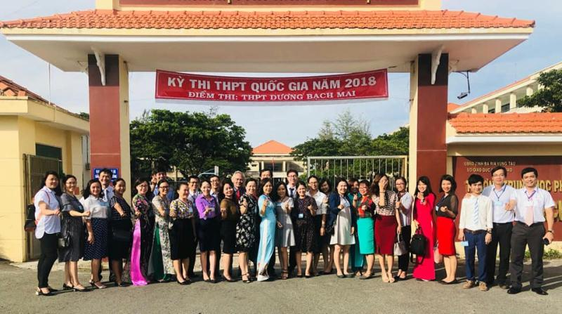

TRƯỜNG TRUNG HỌC PHỔ THÔNG DƯƠNG BẠCH MAI

Ngôi nhà chung Dương Bạch Mai luôn tự hào là nơi mỗi học sinh được học cách cho và nhận yêu thương, nơi mỗi học sinh luôn tự tin tỏa sáng, nơi là bệ phóng để mỗi học sinh xây dựng tương lai thành công. Với triết lý giáo dục hướng đến 5 giá trị cốt lõi: “Tôn trọng, Trách nhiệm, Yêu thương, Hợp tác, Sáng tạo”, nhà trường luôn hướng đến mục tiêu giáo dục: “Đào tạo những học sinh có phẩm chất, kiến thức, kĩ năng ngang tầm học sinh các nước tiên tiến trong khu vực, hòa nhập được với cộng đồng thế giới và trở thành công dân toàn cầu, có thể học tập và làm việc thành công ở Việt Nam cũng như ở các nước trên thế giới.
Đảng bộ nhà trường mà tiền thân là Chi bộ Trường THPT Dương Bạch Mai trực thuộc Đảng bộ khối các cơ quan tỉnh Bà Rịa - Vũng Tàu. Chi bộ được thành lập ngày 28/10/1996, gồm có 09 đảng viên. Tháng 01/2015 chi bộ được nâng cấp thành Đảng bộ gồm 04 chi bộ trực thuộc. 20 năm qua, Đảng bộ đã bồi dưỡng kết nạp được 48 đảng viên, tổng số đảng viên hiện nay của Đảng bộ là 52 người. Trong những năm qua, Đảng bộ luôn giữ vai trò lãnh đạo toàn diện đơn vị, thành tích của nhà trường liên tục được duy trì và nâng cao, Đảng bộ liên tục được công nhận tổ chức TSVM, được Tỉnh ủy tặng Bằng khen.
| 1 | Đồng chí Lê Văn Thái | Bí thư |
| 2 | Đồng chí Phạm Thị Như Trang | Phó Bí thư |
| 3 | Đồng chí Phạm Thị Thanh Mai | Ủy viên |
| 4 | Đồng chí Nguyễn Công Hoan | Ủy viên |
| 5 | Đồng chí Nguyễn Ngọc Thái: | Ủy viên |
| 6 | Đồng chí Nguyễn Văn Tư | Ủy viên |
| 7 | Đồng chí Lê Quang Nhân | Ủy viên |
Hòa chung không khí sôi nổi của Đoàn viên, thanh niên cả nước thi đua lập thành tích chào mừng Đại hội Đảng các cấp tiến tới Đại hội Đảng toàn quốc lần thứ XIII, được sự đồng ý của Đảng ủy trường THPT Dương Bạch Mai, Ban Thường vụ Đoàn khối, Đoàn Trường THPT Dương Bạch Mai đã tổ chức Đại hội Đại biểu Đoàn Trường nhiệm kỳ 2020 – 2021 và bầu ra Ban Chấp hành Đoàn trường nhiệm kỳ mới để tiếp tục lãnh đạo công tác Đoàn và phong trào thanh niên trong nhà trường...
Hòa chung trong không khí thi đua sôi nổi của toàn Đảng, toàn quân và toàn dân cả nước hướng đến chào mừng Đại hội Đảng Cộng sản Việt Nam Lần thứ XIII, hôm nay ngày 22 tháng 6 năm 2020, Đảng bộ trường THPT Dương Bạch Mai long trọng tổ chức Đại hội Đảng bộ Lần thứ VII, Nhiệm kỳ 2020 – 2025...
Ngày 23/03/2022, Đoàn Trường THPT Dương Bạch Mai đã tổ chức chương trình kỷ niệm 91 năm ngày thành lập Đoàn TNCS Hồ Chí Minh (26/3/1931-26/3/2022) và Lễ kết nạp Đoàn viên – Lớp đoàn viên chào mừng Đại hội Đoàn các cấp nhiệm kỳ 2022 – 2027. Nhằm đảm bảo công tác phòng chống dịch Covid-19, chương trình đã được thực hiện theo hình thức trực tiếp kết...
Ngày 20/3/2021, Đoàn Trường THPT Dương Bạch Mai đã tổ chức hoạt động “Ngày Đoàn viên”. Đây là hoạt động trong chuỗi hoạt động Tháng Thanh niên năm 2021 nhằm chào mừng thành công Đại hội Đảng toàn quốc lần thứ XIII và Kỷ niệm 90 năm ngày thành lập Đoàn TNCS Hồ Chí Minh (26/3/1931 – 26/3/2021). Hoạt động “Ngày Đoàn viên” có 3 hoạt động chính...
Thực hiện chuỗi hoạt động Tháng Thanh niên năm 2021 nhằm chào mừng thành công Đại hội Đảng toàn quốc lần thứ XIII và kỷ niệm 90 năm ngày thành lập Đoàn TNCS Hồ Chí Minh (26/3/1931 – 26/3/2021), Đoàn trường THPT chuyên Nguyễn Du đã tổ chức Hội thi làm báo tường với chủ đề “Tự hào Đoàn viên Đoàn TNCS Hồ Chí Minh”...